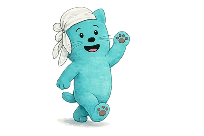
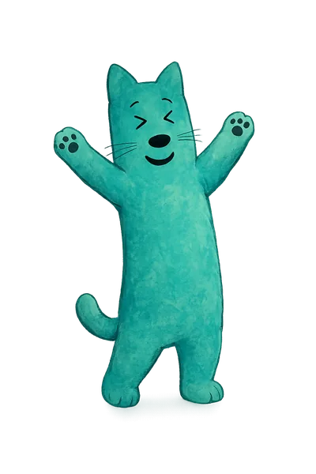
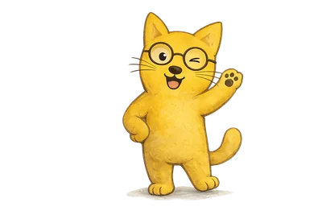
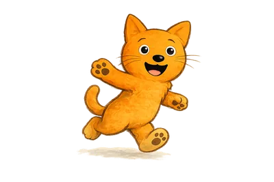
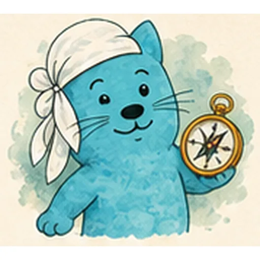
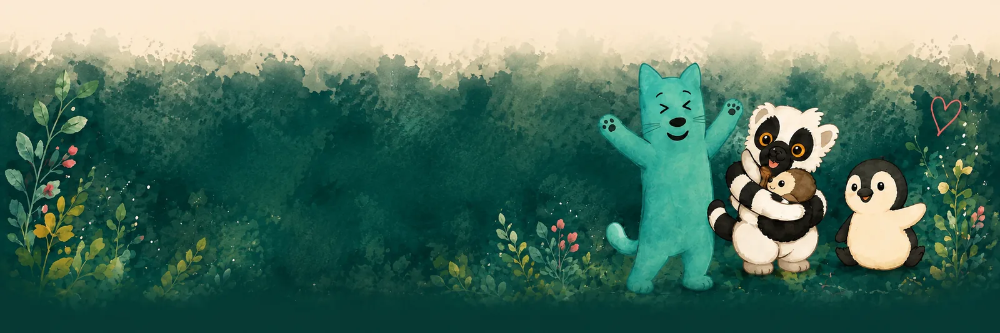

Beziehung
Sicherheit, Resonanz, Verlässlichkeit, Interesse, Humor, Zugehörigkeit und Reparatur. „Dieses Verhalten stoppe ich. Du bleibst Teil unserer Beziehung.“
Mein Ansatz
Verstehen. Verbinden. Verändern.
Ich entschuldige kein verletzendes Verhalten. Aber ich möchte verstehen, was es schützt, was es ausdrückt oder was gerade fehlt. Wenn diese Geschichte verstanden ist, werden neue Entscheidungen möglich – nicht aus Druck, sondern aus Klarheit.

Meine Haltung
Beziehung ohne Autonomie vereinnahmt. Autonomie ohne Beziehung lässt allein. Regulation ohne Beteiligung wird zur stillen Kontrolle. Deshalb suche ich immer eine Antwort, die gleichzeitig verbunden, selbstbestimmungsfördernd und regulierbar ist.
Sicherheit, Resonanz, Verlässlichkeit, Interesse, Humor, Zugehörigkeit und Reparatur. „Dieses Verhalten stoppe ich. Du bleibst Teil unserer Beziehung.“
Wahl, Einfluss, Information, Zustimmung, Mitgestaltung, Nein-Räume und Würde. Auch wo nichts verhandelbar ist, bleibt das Wie gestaltbar – ohne Scheinwahl.
Ruhe leihen, Reize reduzieren, Tempo anpassen, Orientierung geben. Selbststeuerung erwarte ich nicht dort, wo sie gerade unmöglich ist.
Wir fangen außen an,
nicht beim Kind.
Handeln kommt nicht zuerst. Es wird aus einem gemeinsam entwickelten Verständnis abgeleitet.
Rechte und Würde · Lebenswelt und System · Beziehung, Selbstbestimmung und Ko-Regulation · Waldorte und Tiere · fünf Blicke · nächster Schritt im Alltag.
Die fünf Blicke
Sie erzeugen Hypothesen, keine Diagnosen. Die Macherin kommt bewusst zuletzt: Handeln, ohne vorher zu beobachten, zu spüren und das Umfeld anzusehen, erzeugt meist nur mehr Druck.

Was wäre auf einer Kamera erkennbar? Aus „er ist respektlos“ wird: „Er wurde laut, schob den Stuhl zurück und verließ den Raum.“ Und: Wann tritt es eigentlich nicht auf?

Wie hoch ist die Anspannung – bei allen Beteiligten, auch bei mir? Gefühle werden ernst genommen, ohne sie als alleinige Wahrheit zu behandeln.

Welche Funktion könnte das Verhalten haben? Welche Fähigkeit ist gerade nicht zugänglich? Und: Was würde meine Vermutung widerlegen?

Welche Schleife verstärkt sich? Welche Hindernisse sind strukturell? Wer ist überlastet? Wessen Perspektive fehlt am Tisch?
Klein, konkret, gemeinsam gewählt und zeitlich begrenzt. Kein Maßnahmenkatalog, sondern ein Versuch, dessen Wirkung wir gemeinsam ansehen.

Manche Situationen brauchen einen zweiten Durchgang. Er darf der ersten Einschätzung widersprechen – fachlich zeigt sich Haltung nicht darin, recht zu behalten.
So läuft eine Begleitung
Kontakt, Zustimmung, Schutz und aktuelle Belastbarkeit klären.
Die Situation wertfrei rekonstruieren – und die Ausnahmen suchen.
Tiere, Fähigkeiten, Körperzustand und mögliche Funktionen betrachten.
Waldorte, Beziehungen, Geschichte und äußere Bedingungen einbeziehen.
Akute und vorbeugende Unterstützung planen.
Einen kleinen, beteiligungsorientierten Versuch vereinbaren.
Wirkung prüfen, Verantwortung übernehmen, die nächste Anpassung entwickeln.
Wie das im Einzelnen aussieht, ist von Situation zu Situation verschieden. Ich beziehe mich auf unterschiedliche Konzepte – deshalb kann Bewegung genauso sinnvoll sein wie künstlerischer Ausdruck, Spiel, Gespräche oder ein gemeinsamer Spaziergang. Was passt, entscheiden wir gemeinsam.
Bei akuter Selbst- oder Fremdgefährdung, Verdacht auf Gewalt oder Vernachlässigung, schweren psychischen Symptomen, medizinischen Auffälligkeiten oder anhaltendem Funktionsverlust sind spezialisierte Hilfen notwendig. Ich kann die Kommunikation und Übergabe unterstützen – ersetzen kann ich sie nicht.

Ich schaue mit euch hin – und wir finden Schritte, die zu euch passen.